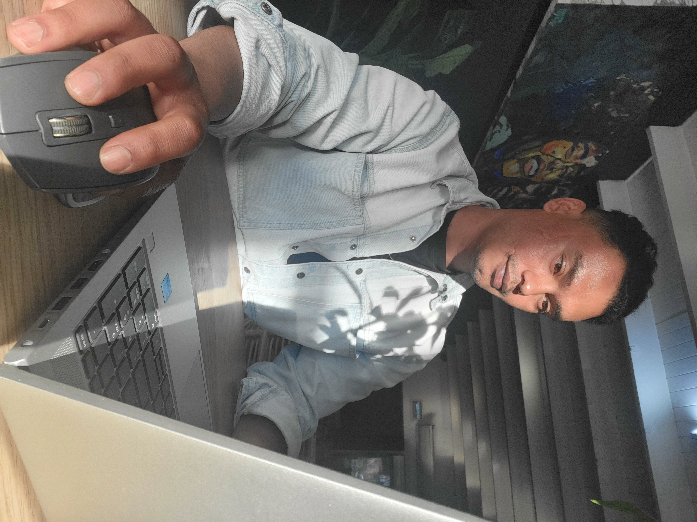

Over Clayton Reitz
Onafhankelijk Software Architect & Senior Engineer met meer dan 17 jaar ervaring in het opleveren van schaalbare, veilige en hoogwaardige systemen binnen enterprise engineering, real-time cloudinfrastructuur en agentic AI.
Wie Ik Ben & Mijn Achtergrond

Ik ben Clayton Reitz — onafhankelijk software-architect, senior full-stack engineer en agentic AI specialist gevestigd in Zaandam, Nederland.
In 2012 behaalde ik mijn Bachelor of Arts in Sociale Wetenschappen & Psychologie aan de University of the Western Cape (UWC). Om mensgerichte ethiek te verbinden met technologie, vervolgde ik mijn studie met een Postdoctoraal Diploma in IT (PGDIT) in Software Engineering.
Mijn professionele softwarecarrière begon in 2013 bij Santam LTD, waar ik bijdroeg aan grootschalige Guidewire verzekeringsmoderniseringen van mainframes. Vervolgens werkte ik aan hoogwaardige zorgintegraties bij Metropolitan Health Group (IBM MQ, IIB v8, WebSphere). Na mijn verhuizing naar Nederland heb ik missie-kritische systemen opgeleverd voor Prodin B.V., DICTU, de Belastingdienst, Detransparantebroker.nl, ABB E-Mobility, Omnia Retail en Gardsign.nl.
Vandaag de dag werk ik via ClayBytes als zelfstandig ZZP-architect. Mijn recente innovaties omvatten het publiceren van Clibo AI Companion (zwevende Android AI-overlay), het bouwen van deep-agent AI-orchestratieplatformen (Spring AI, LangGraph, MCP, LangSmith) en de R&D van sub-milliseconde Solana MEV execution engines voor high-frequency trading (HFT).
Technische Vaardigheden Matrix
☕ Backend & Systemen
🤖 Agentic AI & Automatisering
🎨 Frontend & Mobiel
☁️ Cloud, DevOps & Testing
Carrière overzicht & Werkervaring
- Clibo AI Companion: Ontwikkeling en publicatie van een zwevende Android AI-overlay met Java 21/Spring Boot virtual threads, multi-model routing (Gemini, Claude, OpenAI, Ollama) en BYOK lokale versleutelde opslag.
- Deep-Agent AI Engineering: Ontwerp van multi-agent tool-servers en orchestratiepijplijnen met LangGraph, Model Context Protocol (MCP) en LangSmith observability.
- High-Frequency Trading (HFT) Engine: R&D van een sub-milliseconde Solana MEV/arbitrage execution core met Rust, TensorRT GPU inference en Yellowstone gRPC.
- Real-Time Multiplayer Platform: Full-stack gaming engine gebouwd met Spring Boot, Angular 19, Ionic, Redis en LiveKit WebRTC.
- MFS Flutter/Dart Android App: Ontwikkeling van Flutter/Dart mobiele functionaliteiten verbonden via REST API’s (API-sleutel & e-mail/wachtwoord authenticatie) met legacy BBj-backendsystemen.
- Entiteitsmigratie & DTO Architectuur: Migratie van Java-klassen, domeinmodellen en service-businesslogica naar Flutter/Dart DTO’s, waardoor moderne mobiele UI’s BBj-data kunnen ontsluiten.
- Agentic AI Strategie (Product Board): Lid van de Product Board ter sturing van de strategische roadmap voor Agentic AI (Spring AI, MCP en "Rosetta Stone" codevertaalconcepten).
- Ontwerp van een veerkrachtige Spring Batch automatiseringsoplossing (Java 17/21) met diepe integratie van legacy Oracle PL/SQL procedures.
- Introductie van Testcontainers met een Oracle database-image voor geïsoleerde integratietesten tegen PL/SQL logica.
- Voorbereiding van de applicatie voor geautomatiseerde CI/CD-pijplijnintegratie via GitHub/GitLab.
- Ontwikkeling van backend microservices met Java 17, Spring Boot, PostgreSQL, JDBC en JPA.
- Bouw van uitgebreide integratietestsuites met Docker Testcontainers en e-mailworkflows met JavaMailServer en MailHog.
- Ontwikkeling van REST API’s met Java 17, Spring Security, Hibernate ORM, JPA en SQL conform overheidsrichtlijnen.
- Implementatie van delete-endpoints op basis van objecttype UUID/code voor nauwkeurig catalogusbeheer.
- Containerisatie van services met Docker, cloud-native uitrol op OpenShift en geautomatiseerde CI/CD-pijplijnen met Tekton en Bitbucket.
- Klant: Gardsign.nl (Jan–Okt 2023): Migratie van een online tuinontwerpplatform van een PHP Symfony monoliet naar een cloud-native Java 17+ Quarkus REST API met PostgreSQL, Docker, Kubernetes en GitHub Actions op Linode.
- Klant: Omnia Retail (Jun–Dec 2022): Modernisering van een legacy AngularJS 1.7 dynamisch prijsplatform naar een schone Angular 14 & TypeScript component-architectuur met Storybook.
- Klant: ABB E-Mobility (Jan–Jun 2022): R&D EV-laadinfrastructuur, TypeScript HMI backend, C++ en embedded Java SDKs, WSL2 en Azure DevOps.
- Bouw van een AWS WebRTC real-time videoconferencing platform met OpenVidu, OpenVPN en CloudFormation.
- Ontwerp van IoT-telemetrie referentie-architecturen met Node-RED, Java en AWS voor drone-gebaseerde gewasbewaking.
- Java 8, JEE en WebSphere backendontwikkeling voor missie-kritische zorgprocessen.
- Ontwikkeling van IBM Integration Bus (IIB v8) message flows, SOAP/REST WSDL’s en IBM MQ V8 queue beheer.
- CRM365 Integratie (2014–2015): C# .NET, ASP.NET MVC, Entity Framework, SQL Server en SSRS.
- Java / Guidewire Modernisering (2013–2014): Guidewire PolicyCenter platformmodernisering ter vervanging van legacy mainframes (Java, Spring, Hibernate, Oracle PL/SQL).
Opleiding, Certificeringen & Talen
🎓 Academische Diplomen
Postgraduate Diploma in Information Technology (PGDIT)
Software Engineering • University of the Western Cape (2013)
Bachelor of Arts (BA)
Sociale Wetenschappen & Psychologie • University of the Western Cape (2012)
📜 Professionele Certificeringen
- Microsoft Certified Professional (MCP)
- Microsoft Dynamics CRM 2013 Customization & Deployment
- IBM MQ V8 Solution Design & WebSphere Admin
- Querying Microsoft SQL Server 2012
🗣️ Talen
Engels: Moedertaal (Professioneel & Technisch)
Afrikaans: Moedertaal (Vloeiend)
Nederlands: B2–C1 Professionele Vaardigheid